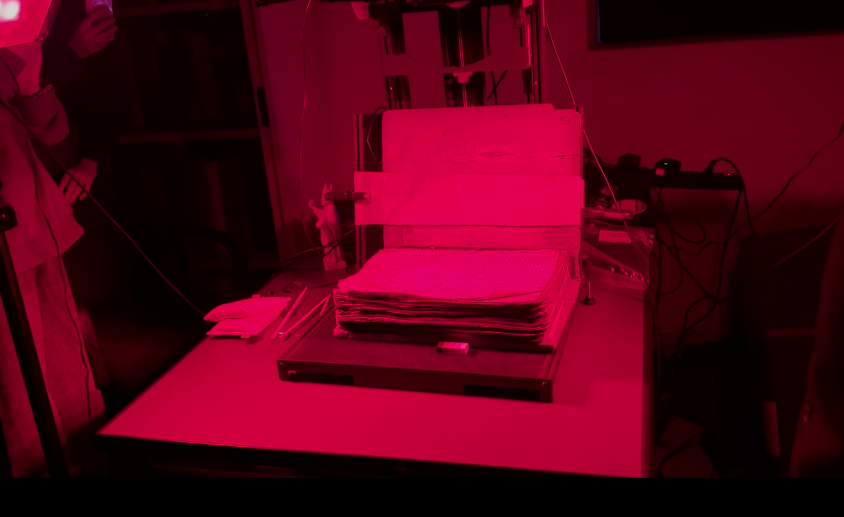
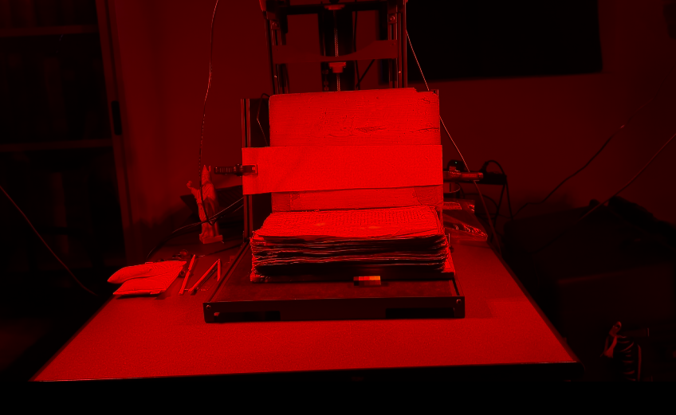
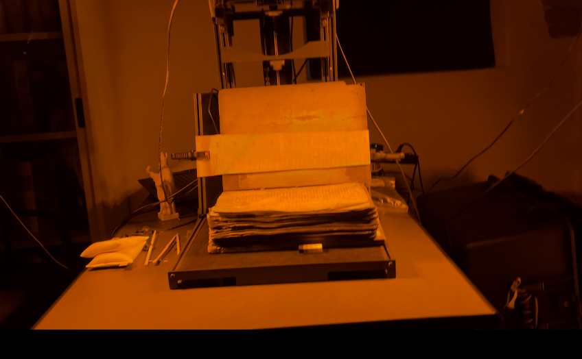
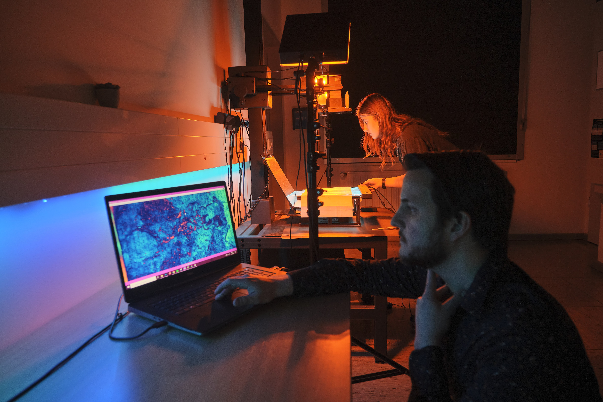
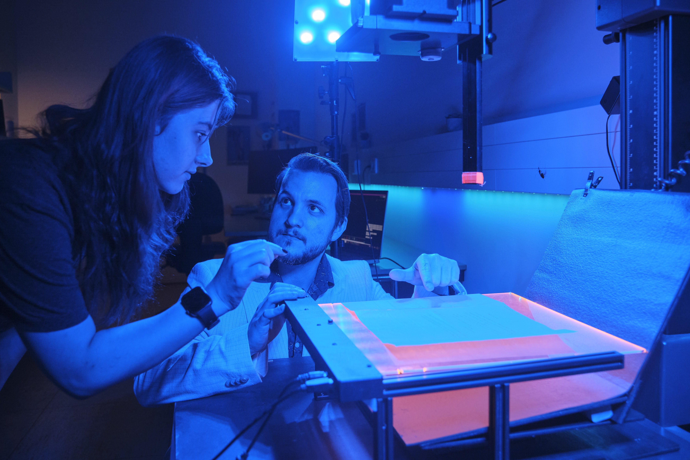

Lesson 6: MSI Challenges and Limitations
Starting from the complex material setup, it is considered costly and bulky. Its overall setup might be challenging as it includes multiple pieces to assemble, for instance the PhaseOne system. Moreover, depending on the imaging scenario; it might not be suitable to image all types of input (manuscripts, paintings, fragments, etc.). For instance, when it comes to large bound codices, a special cradle to hold the manuscript appropriately during the imaging process is needed.



MSI Team multispectral imaging with Dr. Alexander Zawacki at Archivio di Stato di Vercelli, pictures by Ashina Aleyna Yıldız.
The same applies to imaging other types of artefacts, namely maps: They require additional setups to overcome this obstacle. The transmissive light sheet, a necessary component of the set-up, has a limited size and is designed for standard formats, which means that very large folios, or manuscripts with thick bindings or stubs may not fit the system optimally.
As a result, parts of the object - most commonly the outer margins or areas near the binding - may fall outside the illuminated or captured region. In such cases, imaging workflows frequently require manual intervention after acquisition. Multiple scans may need to be stitched together to reconstruct a complete page or fragment, a process that is often carried out using image-editing software such as Photoshop.
While effective, this step is time-consuming and introduces additional labour beyond the imaging session itself. For heavily damaged material, it is not unusual for a single fragment to require several extra hours of post-processing to achieve a usable result.
Although MSI is much more efficient than RGB imaging, when compared to hyperspectral imaging, only a limited number of spectral bands can be captured. This can impact the output after processing.
If the input is acquired via minimal spectral bands, the end result might be noisy. In addition, it necessitates multiple hardware configurations and different filters in order to isolate spectral bands. For instance, the use of a bright broad-spectrum light source requires longtime exposure and can lead to a temperature increase reflected directly to the artefact (a manuscript, a fragment, etc), which requires additional LED lights to overcome this issue.
When it comes to the imaging process, the system is incapable of capturing images in hundreds and is limited to dozens in order to maintain a high spectral resolution alongside the spatial one. Being a system that is highly dependent on the quantity of data gathered, the latter limitation might reflect a potential inefficiency.

Multispectral imaging and reviewing of post-processed images, Dr. Alexander Zawacki and Ashina Aleyna Yıldız at the RCANAlab at SUB Göttingen. Photographed by Martin Liebetruth.
The extent to which MSI is efficient or effective can also be highlighted when a different range of artefacts is being handled. It is hard to discern due to poor documentation what the best practices are, affecting the reproducibility of results across other artefacts. A priori, its efficiency is not static and depends on the object or artefact per se, based on its condition, conservation treatments, or damage.
For instance, parchments in manuscripts or fragments vary, and their fluorescence properties when absorbing short wavelengths and reflecting long wavelengths affect the quality of the image. Hence, an additional challenge occurs when understanding the properties of the material and how it fluoresces. Moreover, the lack of a uniform approach to different artefact materials requires constant adaptation of methods and techniques. Latin, Arabic, or Syriac parchments differ, and so does their composition.
For instance, a parchment high in calcium may obscure undertext. MSI may also fail at differentiating the composition and materiality of ink in a noninvasive manner. Hence, it is unable to identify different inks or pigments that seem identical to the naked eye, making MSI incapable of providing cues about the history or provenance of the artefacts. Thus, its efficiency in providing material metadata is debatable. This can also be pinpointed when attempting to capture relief, texture, or drypoint markings, as it is unable to take a series of images from different angles while illuminating the artefact.
On the other hand, while limitations related to the imaging phase or the object per se can be accounted for, the processing phase is the most prominent predicament. It is a long and arduous process as it necessitates consistent reprocessing to recover the maximum amount of text and making it as legible as possible. Similarly, the image capturing phase requires significant storage, and processing and post-processing requires adequate RAM and an effective central processing unit as the large volume of data often exceeds the capabilities of current hardware and software, making processing difficult.
Once the processing starts, specific software targeted to post-process the significant amount of imaging data is needed. This process is highly dependent on the user as well as the institution; hence, it lacks standardization and consistency. Moreover, the choice of the used processing techniques is often random and lacks and informative explanation or a proper pipeline description. In many MSI projects, advanced processing is carried out using ENVI, a proprietary platform that requires a paid license and, in some cases, institution-specific agreements. The cost of licensing alone can be prohibitive, particularly for smaller research teams, independent scholars, or short-term projects, and access is often limited to institutions with dedicated imaging laboratories.

Multispectral imaging and reviewing of post-processed images, Dr. Alexander Zawacki and Ashina Aleyna Yıldız at the RCANAlab (Advanced Recovery of Cultural Artefacts with Non-invasive Analytics) at SUB Göttingen. Photographed by Martin Liebetruth.
Alternative software such as Hoku are increasingly used in cultural heritage imaging, but they come with their own barriers. While powerful and well adapted to MSI data, such tools typically assume a level of prior technical knowledge. Their effective use often depends on internal documentation, specialized tutorials, or hands-on training that may not be publicly available or suitable for beginners. As a result, new users can face a steep learning curve before they are able to carry out even basic processing tasks with confidence.
These constraints mean that MSI is not only resource-intensive in terms of equipment costs, but also in terms of human expertise. Successful projects typically rely on close collaboration between image scientists, palaeographers, and specialists with strong image-processing skills.
In addition, interpreting MSI data requires an understanding of how inks, pigments, and writing supports respond to different wavelengths of light. Chemical composition, degradation processes, and historical production techniques all influence how details (e.g,. Undertext in palimpsests) appears or fails to appear across spectral bands. Without this contextual knowledge, enhanced images risk being misinterpreted or over-processed.
Multispectral imaging and reviewing of post-processed images, Dr. Alexander Zawacki and Ashina Aleyna Yıldız at the RCANAlab (Advanced Recovery of Cultural Artefacts with Non-invasive Analytics) at SUB Göttingen. Photographed by Martin Liebetruth.
Taken together, these factors reinforce the fact that MSI workflows are highly dependent on specialized software ecosystems, interdisciplinary expertise and trained personnel. The need for costly licenses, restricted access to learning materials, and technical knowledge means that pre- and post-processing remain major bottlenecks.